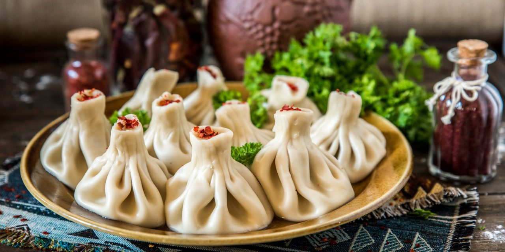
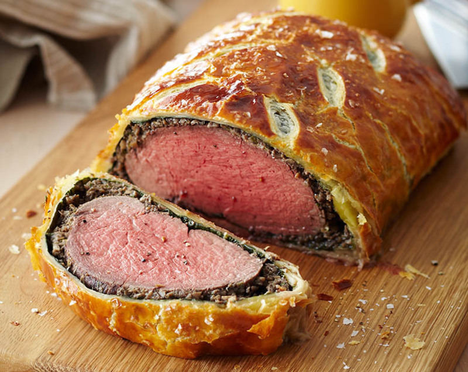
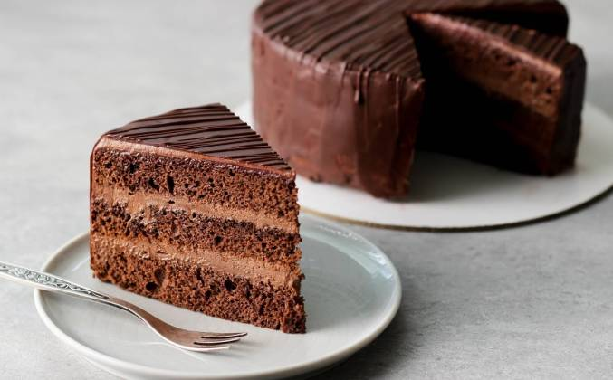

Самые вкусные и любимые блюда!
- Хинкали. Это самое вкусное что может быть. Они бывают из разного вида мяса, например говядина или свинина. Кто-то не ест шапочки у хинкаль, но я их просто обожаю!

- Говядина Веллингтон. Хороший кусок мяса в горчичной обмазке, зажарка из грибов, нежный прошутто, и все это запекается в слоеном тесте, что может быть проще!

- Торт Прага. Все самое любимое в кондитерском производстве собрано здесь. Шоколадный бисквит, шоколадный крем, оформлен шоколадной глазурью, это бомба!
